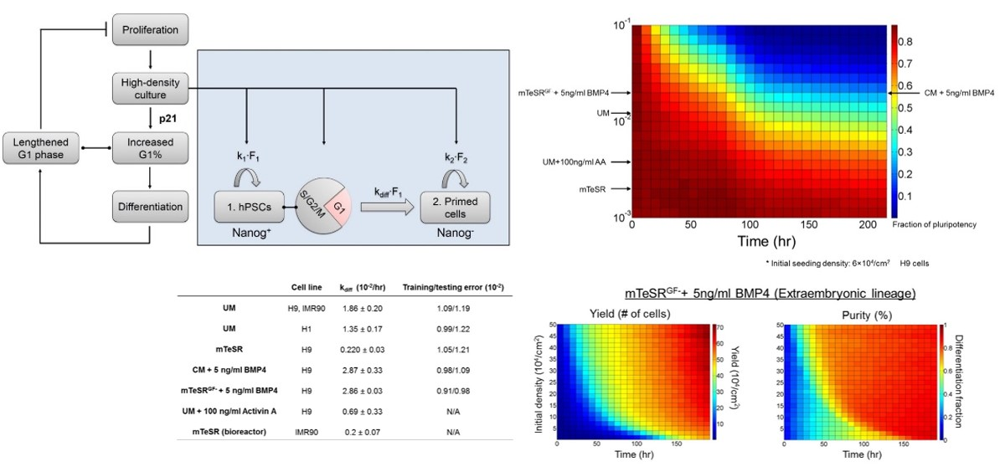
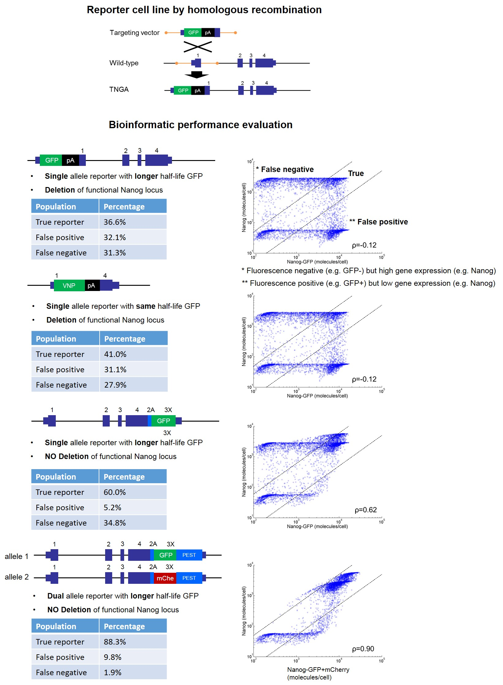
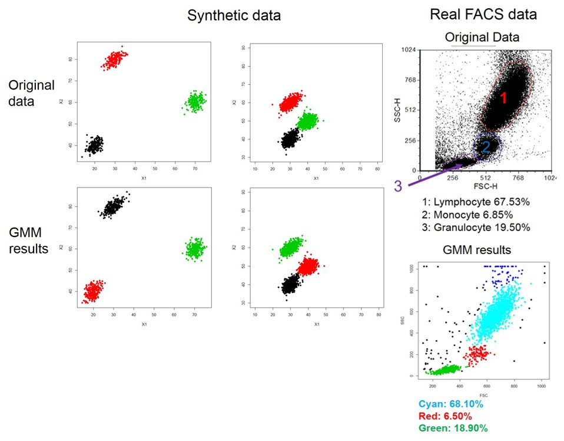
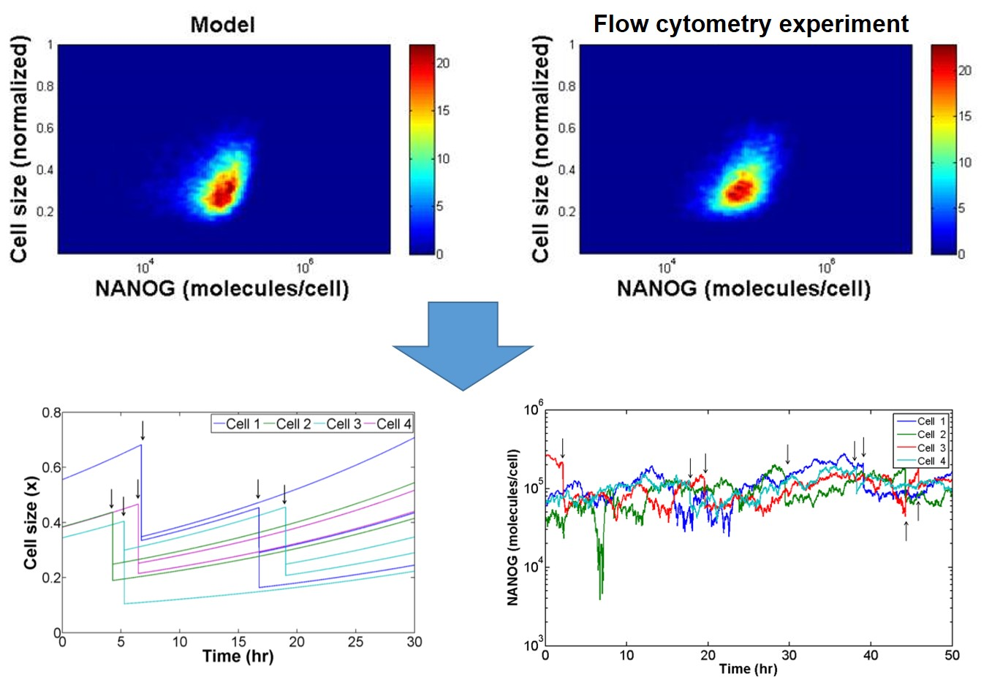
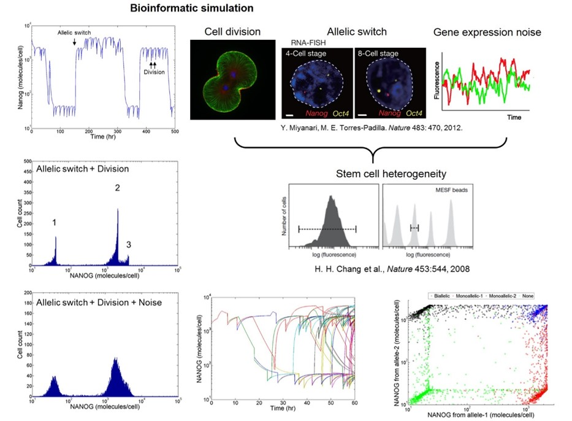
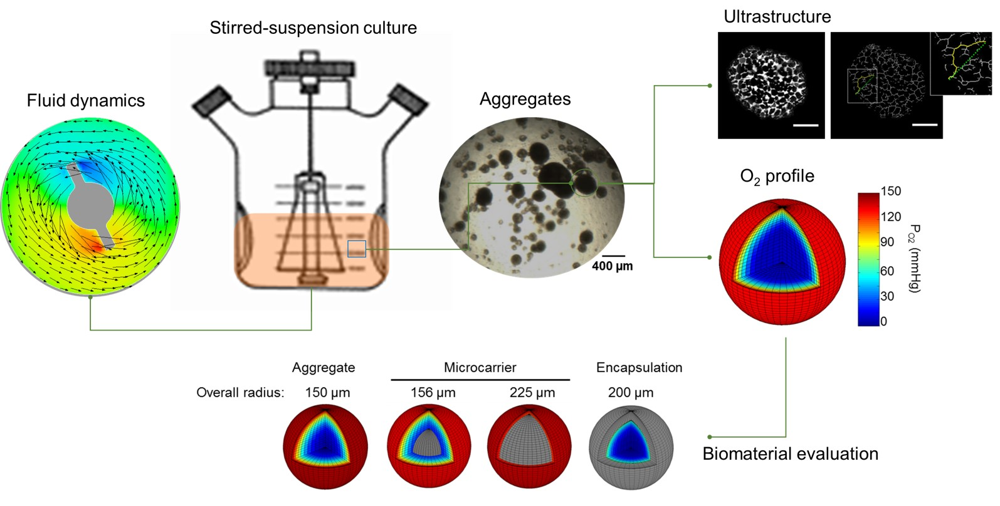
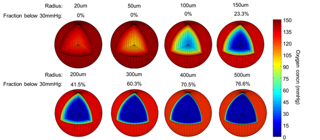

Program developed in Fortran
Visualization in Matlab

Program developed in Java
Visualization in Matlab

Program developed in R
Visualization in R

Program developed in Fortran
Visualization in Matlab

Program developed in Fortran
Visualization in Matlab

Program developed in Matlab
Visualization in Matlab

|  |
Last update @ 03/2015